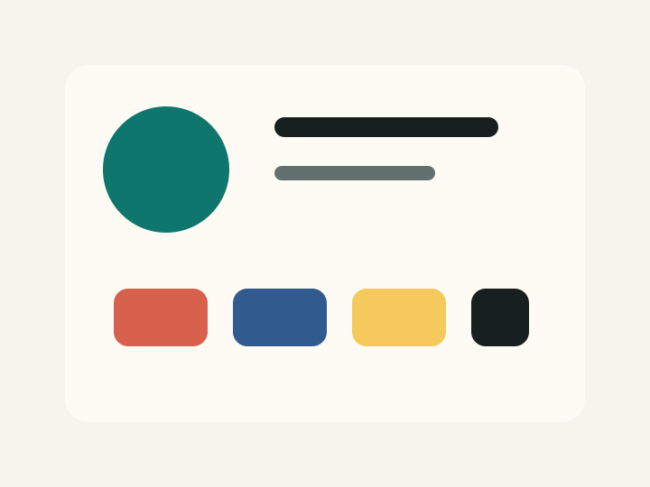
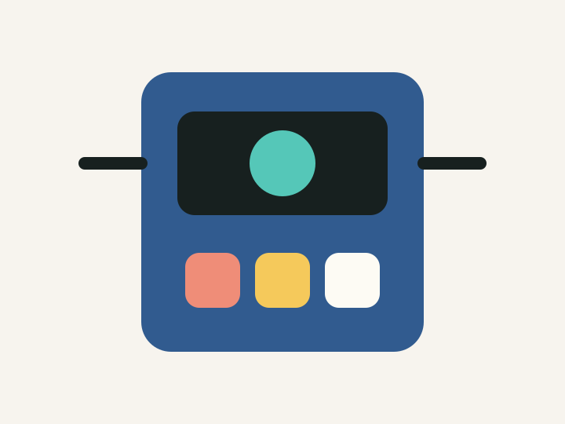
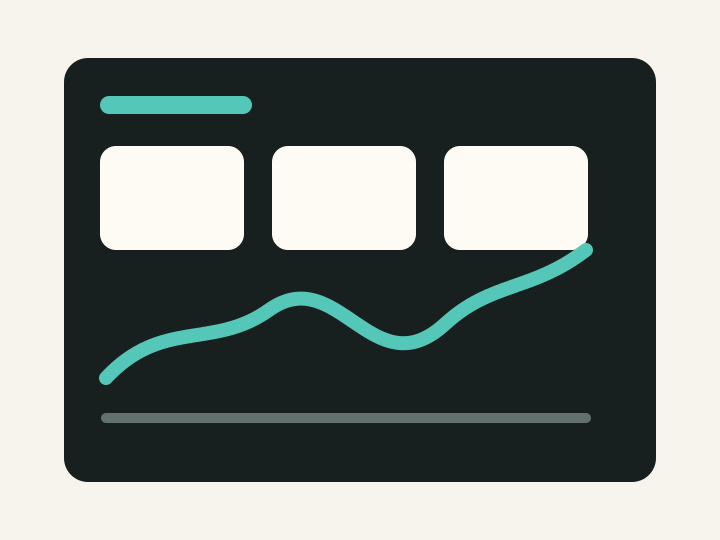

展示空間のための参加型メディア
鑑賞者の接近や滞在によって映像と音が変化する、展示向けの体験設計です。

Technology
- TouchDesigner
- Projection
- Sound
- Sensor
空間内の人の動きを入力として、映像と音のレイヤーが反応する構成を検討しました。作品の前に立つ、離れる、滞在するといった行為が、鑑賞体験の変化として感じられるようにしています。


鑑賞者の接近や滞在によって映像と音が変化する、展示向けの体験設計です。

Technology
空間内の人の動きを入力として、映像と音のレイヤーが反応する構成を検討しました。作品の前に立つ、離れる、滞在するといった行為が、鑑賞体験の変化として感じられるようにしています。

